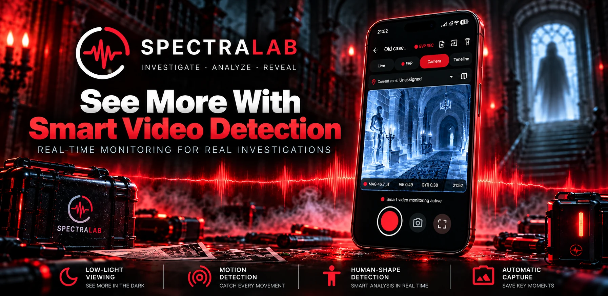
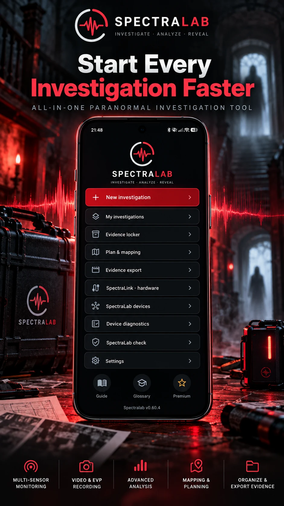
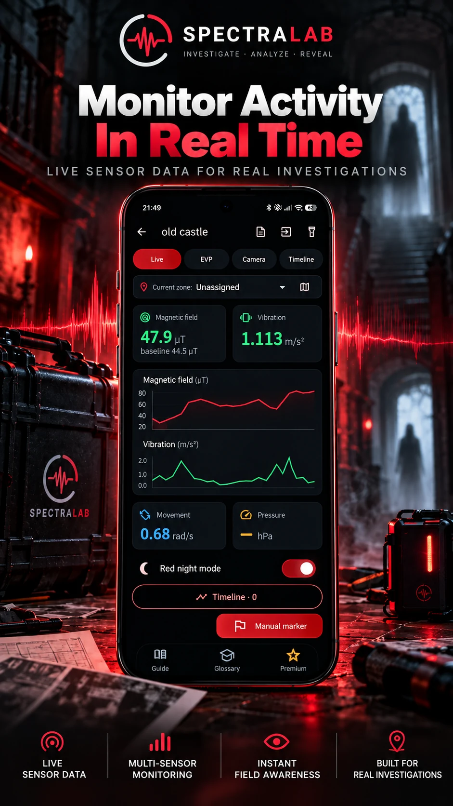
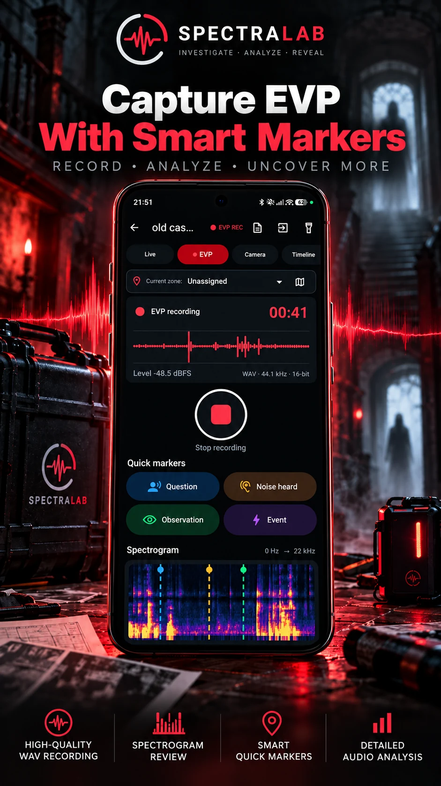
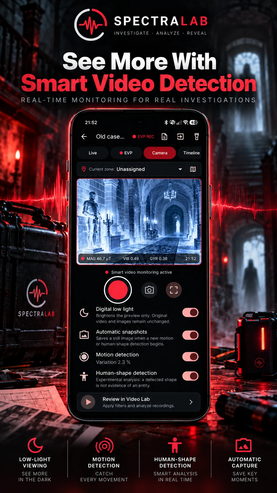
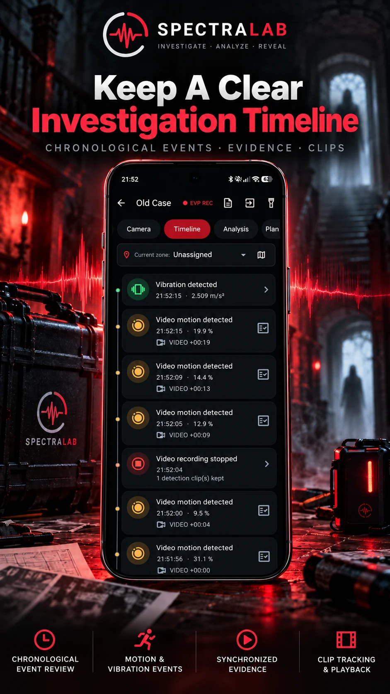
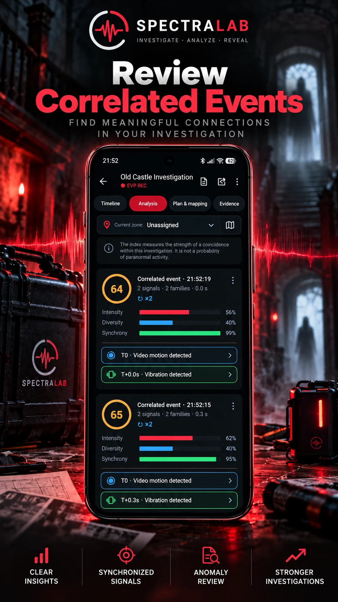

◉
Capteurs en direct
Champ magnétique, vibrations, mouvement et autres capteurs compatibles affichés pendant l'investigation.

Une boîte à outils d'investigation paranormale Android réunissant EVP, capteurs, vidéo intelligente, chronologie, analyse et classement des éléments collectés.
SpectraLab centralise les outils et les données de terrain afin de limiter les changements d'applications et de conserver une chronologie cohérente de l'enquête.
L’application est conçue pour être utilisée par des enquêteurs de différents pays, avec une interface localisée selon la langue choisie.
Champ magnétique, vibrations, mouvement et autres capteurs compatibles affichés pendant l'investigation.
Détection de mouvement, formes humaines, faible luminosité et captures automatiques.
Enregistrement WAV, marqueurs rapides et analyse audio pour retrouver les moments importants.
Événements, mouvements, vibrations et clips regroupés chronologiquement.
Repérez des signaux proches dans le temps sans présenter une coïncidence comme une preuve paranormale.
Classez les éléments collectés, préparez les exports et générez vos rapports d'investigation.
Des écrans pensés pour être lisibles rapidement sur le terrain, y compris dans des environnements peu éclairés.






Pendant une investigation, l'interface doit rester rapide et claire. SpectraLab conserve les événements importants afin de permettre une analyse plus approfondie une fois l'enquête terminée.
Nous recherchons des utilisateurs Android, des enquêteurs paranormaux et des créateurs de contenu prêts à tester sérieusement l'application pendant au moins 14 jours.
Les bêta-testeurs ayant participé jusqu'au terme des 14 jours recevront un code promotionnel lors du lancement officiel. Cette récompense n'est liée à aucun avis ou commentaire positif.
Nous ne recherchons pas de publicité déguisée ni d'avis positif. Nous voulons des retours terrain : ergonomie, autonomie, bugs, qualité des enregistrements et fonctions manquantes.
Proposer ma participation →Oui. La participation au test fermé Android est gratuite.
La phase actuelle concerne Android. Une version iOS pourra être étudiée ultérieurement.
Non. Aucun avantage n'est conditionné à un avis, une note, une vidéo ou un commentaire positif.
Non. SpectraLab collecte, organise et analyse des données. Une anomalie ou une corrélation n'est pas présentée comme une preuve d'activité paranormale.